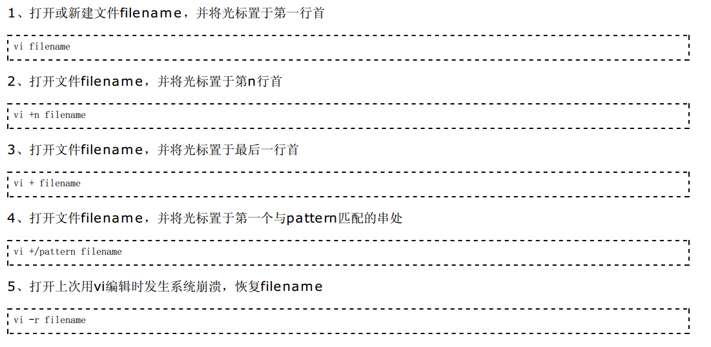
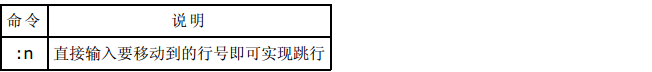
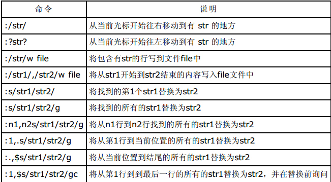
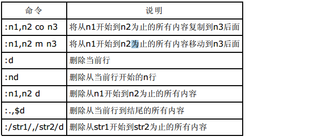
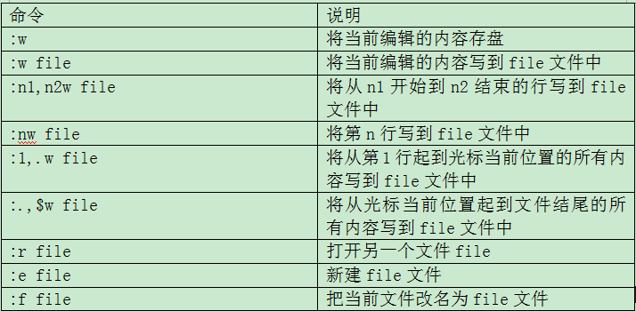
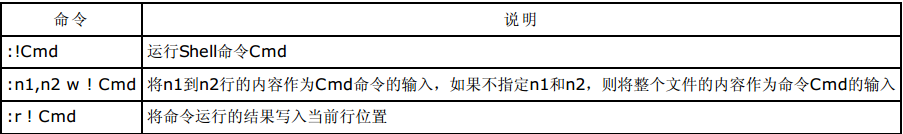
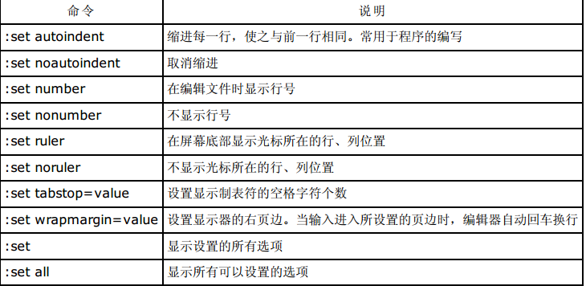
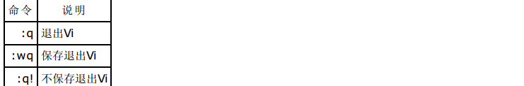

Vi 是 “Visual interface” 的简称，它可以执行输出、删除、查找、替换、块操作等众多文本操作，而且用户可以根据自己的需要对其进行定制，这是其他编辑程序所没有的。
Vi 不是一个排版程序，它不像 M$ Word 或 WPS 那样可以对字体、格式、段落等其他属性进行编排，它只是一个文本编辑程序。
Vi 是全屏幕文本编辑器，它没有菜单，只有命令。
在命令行下键入 vi 即可进入 Vi 界面。还有如下几种进入方法：
Vi 有3种基本工作模式：普通(norm al)模式、插入(insert)模式和命令行(comm and-line 或 Cm dline)模式。
进入Vi之后，首先进入的就是普通模式，进入普通模式后Vi等待编辑命令输入而不是文本输入，也就是说这时输入的字 母都将作为命令来解释。在普通 (norm al) 模式里，你可以输入所有的普通编辑命令。普通模式亦称为命令 (comm and) 模式。
进入普通模式后光标停在屏幕第一行首位上（用_表示），其余各行的行首均有一个“~”符号，表示该行为空行。最后一 行是状态行，显示出当前正在编辑的文件名及其状态。如果是［New File］，则表示该文件是一个新建的文件。如果输 入Vi带文件名后，文件已在系统中存在，则在屏幕上显示出该文件的内容，并且光标停在第一行的首位，在状态行显示 出该文件的文件名、行数和字符数
在普通模式下输入插入命令i、附加命令a、打开命令o、修改命令c、取代命令r或替换命令s都可以进入插入模式。在插 入模式下，用户输入的任何字符都被Vi当作文件内容保存起来，并将其显示在屏幕上。在文本输入过程中，若想回到命 令行模式下，按Esc键即可。
在普通模式下，执行 Ex 命令使用 :，查找使用 ? 和 /，调用过滤命令使用 !。多数文件管理命令都是在此模式下执行 的。末行命令执行完后，Vi自动回到普通模式。
关于这3种模式的转换如图所示。
Vi 三种模式之间的转换示意图
1、跳行
2、字符串搜索、替换
vi 支持基本的正则表达式 Basic regular expre ssion (BRE)，上述命令中的 str 和 str1 可以使用正则表达式进 行搜索。
3、文本的复制、移动和删除
4、文件相关
5、执行 Shell 命令
6、设置 Vi 环境
7、退出 Vi
